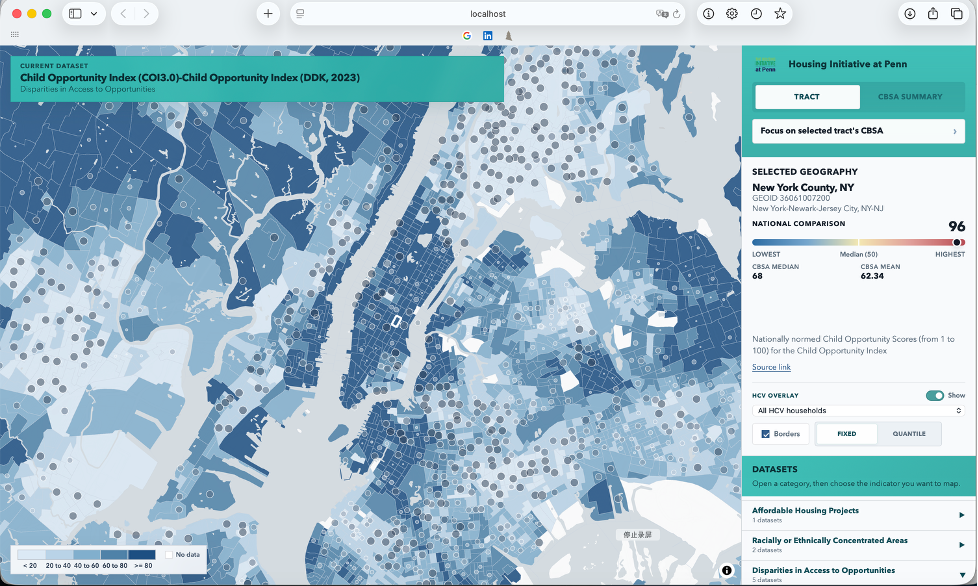
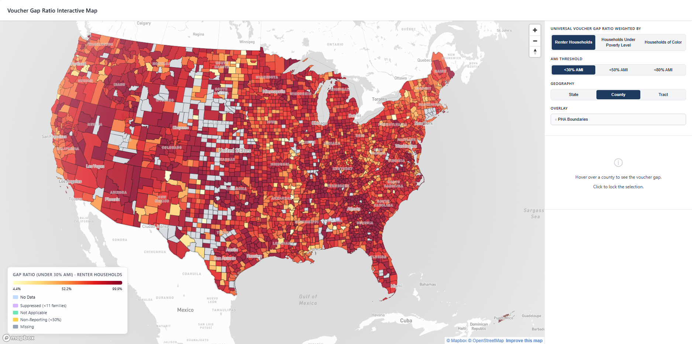
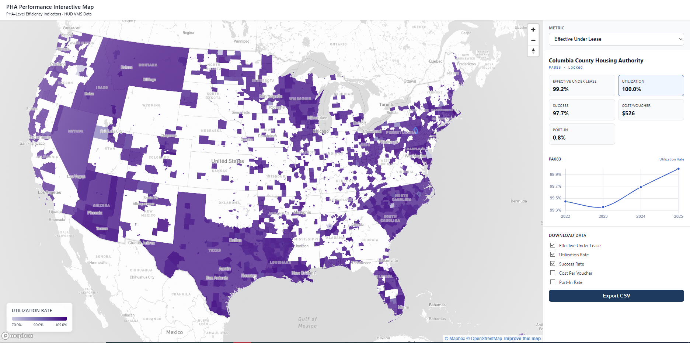
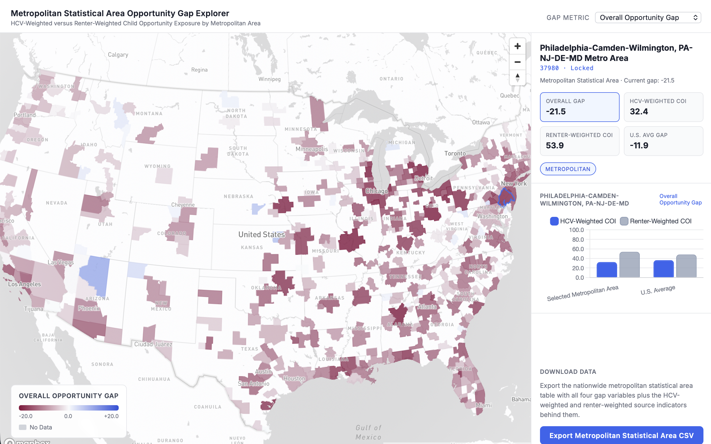
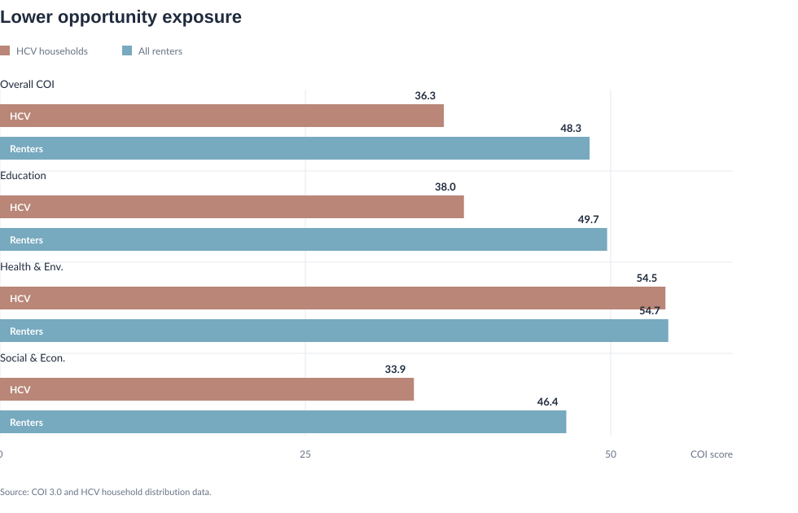
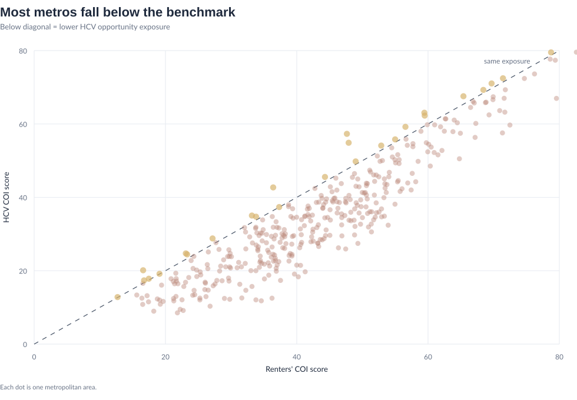

Housing Choice Voucher Research Platform
Do Housing Choice Vouchers Deliver Real Housing Choice?
A national visual report tracing voucher assistance from unmet rental need, through local program performance, to neighborhood opportunity after lease-up.
Enter ReportDo Housing Choice Vouchers Deliver Real Housing Choice?
A national visual report tracing voucher assistance from unmet rental need, through local program performance, to neighborhood opportunity after lease-up.
The project follows the voucher process from need, to program administration, to post-lease-up opportunity. It asks where eligible renters remain underserved, where PHA performance differs across local systems, and whether voucher households are reaching neighborhoods with opportunity conditions comparable to renters overall.
The Core Question: Does Assistance Become Real Choice?
The Housing Choice Voucher (HCV) program is built on a powerful promise: instead of limiting low-income households to a fixed public housing unit, it should help them rent in the private market and exercise meaningful choice over where they live. But that promise depends on more than the formal existence of a subsidy. It depends on whether assistance is available, whether local agencies and markets allow vouchers to turn into leases, and whether lease-up expands access to neighborhoods with real opportunity.
This project starts from that gap between policy design and lived access. A voucher can reduce rent burden, but it can also be blocked by scarcity, waiting lists, landlord refusal, payment standards, search deadlines, administrative friction, and unequal neighborhood markets. The central question is therefore not simply how many vouchers exist, but whether the voucher system actually moves households from unmet need toward stable housing and broader spatial choice.
What This Platform Does
This project assembles a national, multi-scale dataset to examine where the Housing Choice Voucher system succeeds, where it falls short, and where its promise of choice becomes constrained by local housing markets. Rather than treating vouchers as a single program output, the platform connects assistance need, PHA administration, lease-up conditions, and neighborhood opportunity across national, state, county, census tract, ZIP code, and PHA geographies where available.
The platform is designed as both a data summary and a critical research tool. It asks not only how many vouchers are in use, but whether assistance reaches eligible renters, whether local systems can convert vouchers into actual leases, and whether successful lease-up gives households access to neighborhoods comparable to the broader renter market. This matters because high aggregate program performance can coexist with deep unmet need, uneven local capacity, and unequal spatial outcomes.
A National Interactive Data Platform
This first interactive tool functions as the project's general data platform. It brings together HCV indicators and neighborhood context variables in a shared spatial interface so researchers can move from broad national patterns to specific local conditions.
Rather than presenting one fixed finding, the platform supports exploration: users can examine voucher households, subsidized housing patterns, renter demographics, poverty, rent burden, local housing conditions, and related neighborhood context across multiple geographies. This provides the empirical foundation for the more focused analytical modules that follow.
The platform is accompanied by two documentation files: a methodology document that explains how the tool's indicators were constructed and recalculated, and a data dictionary that defines the variables used in the interactive map.
Due to file size limitations, this interactive data platform is not currently deployed through GitHub.

A Research Framework for Real Housing Choice
The interactive platform provides the broader empirical base; the rest of the report turns that base into three linked tests of whether voucher assistance becomes real housing choice. The framework treats the voucher not as a single benefit, but as a pathway shaped by scarcity, administration, landlord participation, payment standards, search time, and neighborhood opportunity.
- Unmet assistance need: the Voucher Gap Ratio asks where eligible renters remain underserved, and how the geography of shortage changes when need is viewed through renter, child, poverty, elderly, and racial equity lenses.
- Administrative conversion: the PHA Level Performance Metrics ask whether local systems can convert available assistance into actual leases, and where high aggregate utilization may still mask issued-but-not-leased vouchers, fiscal constraints, portability effects, or local market bottlenecks.
- Post-lease-up opportunity: the Opportunity Gap asks whether households who successfully lease up are reaching neighborhoods comparable to the broader renter market, or whether voucher use remains spatially constrained after the formal search process ends.
Voucher Access Pathway and Research Modules
Why Start from the User Perspective
Existing research shows that the strongest barriers often appear between formal eligibility and actual housing outcomes. Voucher holders may face closed waiting lists before assistance is available, search pressure after issuance, landlord refusal during the housing search, administrative delays before lease approval, and unequal neighborhood access even after move-in. Starting from the user perspective makes these hidden frictions visible.
This matters because standard program measures can make the system look more complete than it feels to households trying to use it. A voucher may be funded but unavailable, issued but unused, leased but geographically constrained, or counted as a success while still leaving a family in a low-opportunity environment. Following the user pathway helps connect program performance to lived access.
- Before entry: limited supply, closed waiting lists, lotteries, and long delays determine who ever receives assistance.
- After issuance: the voucher creates a time-limited search process in which households must find an eligible unit, landlord, rent level, and inspection timeline that all align.
- During the search: landlord refusal, source-of-income discrimination, limited listings, weak information, and payment standards can narrow the geography of realistic choice.
- At lease-up: administrative approvals, inspections, portability rules, and market rents can determine whether an apparently viable unit becomes an actual subsidized lease.
- After move-in: the location of the leased unit shapes whether the voucher delivers only rent relief or also access to safer, better-resourced, and more opportunity-rich neighborhoods.
In short: this report evaluates HCV not only as a subsidy program, but as a chain of access. Each module asks where that chain breaks: before assistance reaches eligible renters, during local program administration, or after lease-up when the geography of opportunity is finally revealed.
Voucher Gap Ratio
This module maps where eligible renters face the largest mismatch between housing need, voucher supply, and access to assistance — at the state, county, and census tract level.

What the Voucher Gap Ratio Reveals
At the state level, when the voucher gap ratio is weighted by renters, the pattern shows that the gap is consistently high across most of the country, with particularly strong concentrations in the South, Southwest, and parts of the Midwest. States like Texas, Florida, Arizona, and many in the Southeast appear darker, indicating that a large share of renter households are not covered by vouchers. While some Northeastern and Upper Midwest states show slightly lower values, the overall pattern suggests that the shortage is widespread and affects large renter populations rather than being confined to a few regions.
At the county level, the pattern becomes much more detailed and uneven. Instead of broad regional trends, there are clusters of very high voucher gaps within states, especially in urban and peri-urban counties, areas with high renter concentrations, and much of the Southern and Sunbelt regions. At the same time, there are scattered pockets of lower gaps, which are often associated with smaller populations, lower renter shares, or places where data is suppressed or missing.
Weighting by poverty highlights that the voucher gap is most severe and most widespread among the lowest-income households
When the voucher gap is weighted by households under the poverty level, the map shows an even more uniformly high gap across almost all states. Most states appear in darker shades, indicating that a very large share of low-income households are not being reached by vouchers. Compared to renter-weighted patterns, the variation across states becomes smaller, suggesting that voucher shortages are consistently severe for the poorest households nationwide, not just in specific regions. At the county level, the map reveals a widespread and dense concentration of high gaps, with most counties showing very high values. The pattern is less about distinct regional clusters and more about near-universal shortfall, especially across the South, Midwest, and large parts of the West. While there are a few scattered counties with lower values, they are limited and do not form strong geographic patterns.
Maps reveal Higher Voucher Gaps for Households of Color
When the voucher gap is weighted by households of color, the map shows a consistently high gap across most states, but with clearer concentration in the South, Southwest, and parts of the Midwest. States like Texas, Arizona, Nevada, and much of the Southeast appear darker, indicating that households of color face particularly large shortfalls in voucher coverage. Compared to other weightings, this pattern more clearly reflects structural disparities, where regions with larger populations of households of color also experience deeper unmet need. At the county level, the pattern becomes highly concentrated and clustered, especially in the South and in urban areas across the country. Many counties show very high gap values, with dense clusters in areas that have both high shares of households of color and high renter vulnerability. While there are some scattered counties with lower values, the dominant pattern is one of widespread and concentrated disadvantage, rather than evenly distributed gaps.
PHA Level Performance Metrics
This national interactive map links PHA-level HCV administrative indicators with the broader geography of housing need and local conditions, offering a first view of where formal assistance translates into real lease-up capacity.

What the PHA Performance Pattern Reveals
At the PHA level, the performance patterns reveal a system that is broadly operating at or near full capacity, but with significant underlying heterogeneity and structural inefficiencies. Median utilization rates hover at approximately 100%, with even the lower quartile above 99%, indicating that most housing authorities are successfully leasing nearly all available vouchers. This is reinforced by high success rates (median ≈ 97%), suggesting that once vouchers are issued, they are highly likely to be converted into active leases. However, the presence of utilization rates exceeding 100% and extreme maximum values signals measurement inconsistencies, likely driven by portability dynamics or reporting discrepancies, rather than true over-utilization.
At the same time, the distribution of issued-but-not-leased vouchers (mean ≈ 133, with a long right tail) highlights persistent frictions in voucher absorption for a subset of PHAs, pointing to localized market constraints such as landlord participation or housing availability. Financial indicators further underscore disparities: while median reserve balances are substantial (~$140K), the wide range up to over $1.3 million suggests uneven fiscal capacity across agencies. Similarly, cost per voucher varies dramatically, with a heavy right tail, indicating that some PHAs operate in significantly higher-cost environments or face inefficiencies in program delivery.
Portability plays a relatively minor role for most PHAs (median port-in rate = 0), but the existence of high outliers implies that certain jurisdictions function as net receivers in regional housing markets, potentially inflating their apparent utilization. Overall, the data suggests a system that is efficient on average but uneven in practice, where high aggregate performance masks localized bottlenecks, fiscal disparities, and measurement distortions driven by inter-jurisdictional dynamics.
| Indicator | Definition |
|---|---|
| Effective Under Lease | The number of vouchers a PHA is actively using to house families within its own jurisdiction — total vouchers under lease minus port-in vouchers administered on behalf of other PHAs. |
| Utilization Rate | The share of a housing authority's authorized voucher budget that is currently leased up — measures how much of available voucher capacity is being actively used. |
| Success Rate | The percent of vouchers issued to families in a year that result in an actual lease and assistance contract with a landlord — measures the ability of individual recipients to successfully use their vouchers. |
| Cost Per Voucher | The average Housing Assistance Payment (HAP) a PHA spends to keep one voucher actively leased within its own jurisdiction — total HAP expenditure divided by effective under lease. |
| Port-In Rate | The share of a PHA's total active leases that are vouchers originating from another PHA — families who were issued a voucher elsewhere and chose to move into this PHA's jurisdiction. |
Opportunity Gap
The PHA performance metrics show whether local agencies can convert voucher assistance into actual leases. But a lease is still an intermediate outcome, not the full promise of housing choice. Even after a household has waited for assistance, received a voucher, searched under time pressure, found a qualifying unit, passed program requirements, and finally moved in, a new question remains: did the voucher open access to a neighborhood with stronger opportunity conditions, or did the household simply reach the first place where the program could be made to work? This section therefore moves from administrative conversion to spatial outcome, asking whether successful lease-up also means meaningful access to opportunity.

Opportunity Matters After Lease-Up
This module uses the Child Opportunity Index (COI) as a central measure of whether housing assistance translates into access to opportunity. COI is a composite measure of neighborhood conditions and resources linked to children's healthy development, bringing together 44 neighborhood-level indicators across education, health and environment, and social and economic opportunity. The Opportunity Gap map compares metropolitan statistical area-level opportunity exposure for HCV households with the broader renter population, showing where voucher households are concentrated in lower-opportunity or higher-opportunity neighborhoods relative to renters overall. Read this way, the question becomes sharper: not simply whether HCV helps families lease a unit, but whether the program helps them reach neighborhoods with meaningfully stronger opportunity structures.
Research on voucher mobility and landlord participation suggests that neighborhood outcomes are shaped by far more than household preference alone. Search constraints, landlord gatekeeping, time pressure, payment standards, administrative friction, and local rental supply all narrow where voucher holders can realistically succeed. For that reason, unequal opportunity outcomes should not be treated as an incidental consequence after lease-up; they are one of the clearest tests of whether the promise of "choice" has actually been fulfilled.
National Pattern: Lease-Up Does Not Equal Equal Opportunity
The national comparison shows a clear gap between where voucher households live and where renters overall live. Across metropolitan areas, the HCV-weighted overall Child Opportunity Index score is 36.3, compared with a renter-weighted benchmark of 48.3. In other words, successful lease-up does not necessarily mean access to comparable neighborhood opportunity.
This finding should be read as descriptive rather than causal. The chart does not prove that vouchers cause lower-opportunity placements, but it does show that the observed geography of voucher use is associated with systematically lower opportunity exposure. That distinction matters: the issue is not simply whether households use assistance, but where that assistance can realistically be used.
Where the Gap Becomes Visible
The metro-level extremes make the national pattern more concrete. In places such as Kankakee, Niles, Canton-Massillon, St. Louis, and Detroit, voucher households are positioned far below the local renter benchmark. These gaps suggest that local housing markets may be narrowing the geography of voucher use in ways that are not visible from lease-up rates alone.
The positive exceptions are just as important. Metro areas such as Flagstaff, Manhattan, Grand Island, Gettysburg, and Farmington show HCV-weighted opportunity exposure at or above the renter benchmark. These cases suggest that lower-opportunity placement is not inevitable. Local conditions, including landlord participation, payment standards, mobility supports, and administrative practices, may shape whether vouchers function only as affordability assistance or also as tools for expanding spatial access.
{kind=link}


A Structural Pattern, Not a Few Outliers
The scatter plot reinforces the broader pattern. Each point represents a metropolitan area, comparing renter-weighted COI exposure with HCV-weighted COI exposure. Most points fall below the equality line, meaning voucher households are exposed to lower-opportunity neighborhoods than renters overall in most metropolitan areas.
This does not identify the exact mechanism behind each metro's gap. It cannot separate the effects of landlord refusal, search constraints, payment standards, administrative burden, or rental supply. But it does show that the opportunity gap is widespread enough to be treated as a core dimension of HCV performance, not a side issue.
{kind=link}

What the Metropolitan Pattern Reveals
Read together, these figures suggest that the Housing Choice Voucher program often succeeds at subsidizing rent without fully delivering spatial choice. Housing assistance still matters for affordability and stability, but affordability and opportunity are not the same outcome.
The positive metro exceptions show that broader spatial access is possible. The dominant pattern, however, suggests that many local voucher systems still need stronger landlord engagement, better search support, more flexible payment standards, source-of-income protections, and mobility-oriented program design.
In short, the opportunity gap reframes HCV performance after lease-up. It asks whether the program is only helping families rent somewhere, or whether it is helping them rent in places that expand access to opportunity. The evidence suggests that, across much of the country, the answer remains incomplete.
Opportunity Metric Guide
| Indicator | Definition | Interpretation |
|---|---|---|
| Overall Opportunity Gap | Difference between the metropolitan statistical area-level HCV-weighted Child Opportunity Index and the renter-weighted Child Opportunity Index (hcv_coi_idx - renter_coi_idx). | Negative values mean HCV households are located in lower-opportunity neighborhoods than renters overall; positive values mean the reverse. |
| Education Opportunity Gap | Difference between HCV-weighted and renter-weighted education domain scores (hcv_coi_edu - renter_coi_edu). | More negative values indicate voucher households are more concentrated in neighborhoods with weaker education opportunity. |
| Health & Environment Gap | Difference between HCV-weighted and renter-weighted health and environment domain scores (hcv_coi_health_env - renter_coi_health_env). | More negative values indicate voucher households are more concentrated in neighborhoods with weaker health and environmental opportunity. |
| Social & Economic Gap | Difference between HCV-weighted and renter-weighted social and economic domain scores (hcv_coi_eco - renter_coi_eco). | More negative values indicate voucher households are more concentrated in neighborhoods with weaker social and economic opportunity. |
| HCV-Weighted Opportunity Score | Metropolitan statistical area-average neighborhood opportunity exposure for HCV households, calculated by weighting tract opportunity scores by HCV household counts. | Higher values mean voucher households are, on average, located in higher-opportunity tracts within that metropolitan area. |
| Renter-Weighted Opportunity Score | Metropolitan statistical area-average neighborhood opportunity exposure for renter households overall, calculated by weighting tract opportunity scores by renter counts. | This serves as the benchmark for understanding whether voucher households are reaching neighborhoods comparable to the broader renter market. |
Definitions & Methods
This section documents how each module translates the broader research question into measurable indicators. The Opportunity Gap method is completed here; the Voucher Gap Ratio and PHA Performance methods are left as structured placeholders for the relevant module owners.
| Module | Method | Interpretation and Caveats |
|---|---|---|
| Voucher Gap Ratio |
The gap ratio is computed as 1 minus the ratio of total vouchers in use to the eligible renter universe at a given AMI threshold (<30%, <50%, <80%). Renter counts at each threshold are cumulative sums from CHAS data. Total vouchers come from HUD Picture of Subsidized Households. For the poverty lens, vouchers attributed to poverty households are estimated by applying the share of voucher holders below the poverty line (from HUD Picture) to total units, then compared against the ACS poverty household universe. For the race lens, vouchers attributed to Black non-Hispanic and Hispanic households are estimated using racial composition shares from HUD Picture, then compared against the corresponding CHAS renter universe at each AMI threshold. Metro-level ratios are derived by first reconstructing absolute unit counts from county-level ratios, then re-computing the ratio from aggregated counts — avoiding the averaging-of-ratios fallacy. |
|
| PHA Level Performance Metrics |
Variables from HUD Voucher Management System (VMS) and Picture of Subsidized Households were assembled into a panel dataset in R. Outliers were identified using interquartile range and removed before computing the following metrics, which are exported as GeoJSON for mapping. Effective Under Lease is the number of vouchers a PHA is actively using within its own jurisdiction — total vouchers under lease minus port-in vouchers administered on behalf of other PHAs. Utilization Rate is the share of a PHA's authorized voucher budget that is currently leased up, calculated as effective under lease divided by total authorized vouchers. Success Rate is the share of issued vouchers that result in an actual lease — under lease divided by the sum of under lease and issued-but-not-yet-leased vouchers. Cost Per Voucher is total Housing Assistance Payment (HAP) expenditure divided by effective under lease, measuring the average HAP cost per voucher the PHA is genuinely responsible for. Using effective under lease (rather than raw under lease) prevents port-in vouchers from deflating the per-unit cost. Port-In Rate is the share of a PHA's active leases that originated from another PHA's voucher holders who moved into its jurisdiction, calculated as port-in vouchers divided by total vouchers under lease. |
|
| Opportunity Gap |
The Opportunity Gap module measures whether successful voucher lease-up is associated with neighborhood opportunity exposure comparable to the broader renter population. The unit of analysis is the metropolitan statistical area. For each metro area, tract-level Child Opportunity Index scores are averaged twice: once using HCV household counts as weights, and once using renter household counts as weights.
HCV exposure
HCV exposure
=
Σt HCV householdst × COI scoret
Σt HCV householdst
Renter exposure
Renter exposure
=
Σt renter householdst × COI scoret
Σt renter householdst
Opportunity Gap
Opportunity Gap
=
HCV exposure - renter exposure
|
Negative values indicate that HCV households are exposed to lower-opportunity neighborhoods than renters overall within the same metro area. Positive values indicate relatively higher HCV exposure. The measure should be read as a descriptive spatial outcome, not as proof of household preference or causal program impact. It captures where voucher households successfully lease up, but not unsuccessful searches, landlord refusals, search time, or units that fell through before lease-up. |
Datasets & References
Download the methodology document for this interactive platform, including indicator construction, recalculated measures, and processing notes.
Download the spreadsheet dictionary for the variables, field names, and definitions used in the Opportunity Gap module of this interactive map tool.
Download the spreadsheet dictionary for the variables, field names, and definitions used in the Voucher Gap Ratio and PHA Level Performance Metrics modules.
| Module | Data Sources | Use in This Project |
|---|---|---|
| Voucher Gap Ratio |
Picture of Subsidized Households (PSH) Consolidated Planning / CHAS Data ACS Data |
|
| PHA Level Performance Metrics |
HUD Voucher Management System Data Approximate PHA Level Jurisdiction / Service Boundaries |
|
| Opportunity Gap |
HUD Picture of Subsidized Households for HCV household locations; renter household counts from Census/ACS-derived tract data; Child Opportunity Index 3.0-2023 from diversitydatakids.org.
HUD Picture of Subsidized Households U.S. Census Bureau ACS Child Opportunity Index |
These sources are combined to estimate metropolitan opportunity exposure for HCV households and renters overall. The COI provides tract-level opportunity scores, while HCV and renter counts provide the population weights used to construct exposure measures. COI 3.0-2023 includes 44 indicators across education, health and environment, and social and economic domains. |